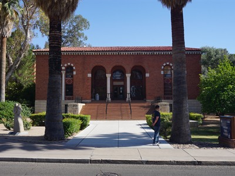
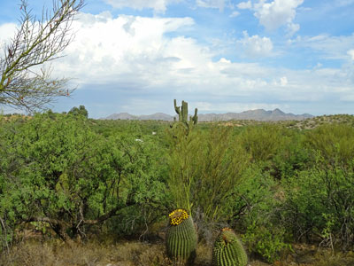
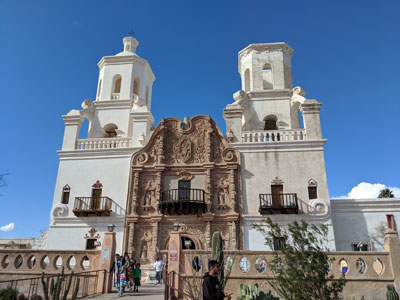
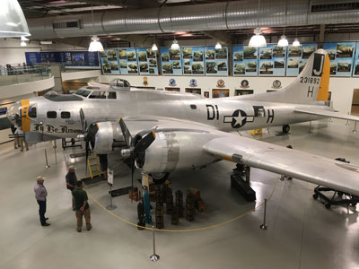
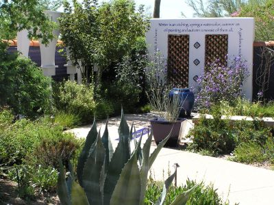
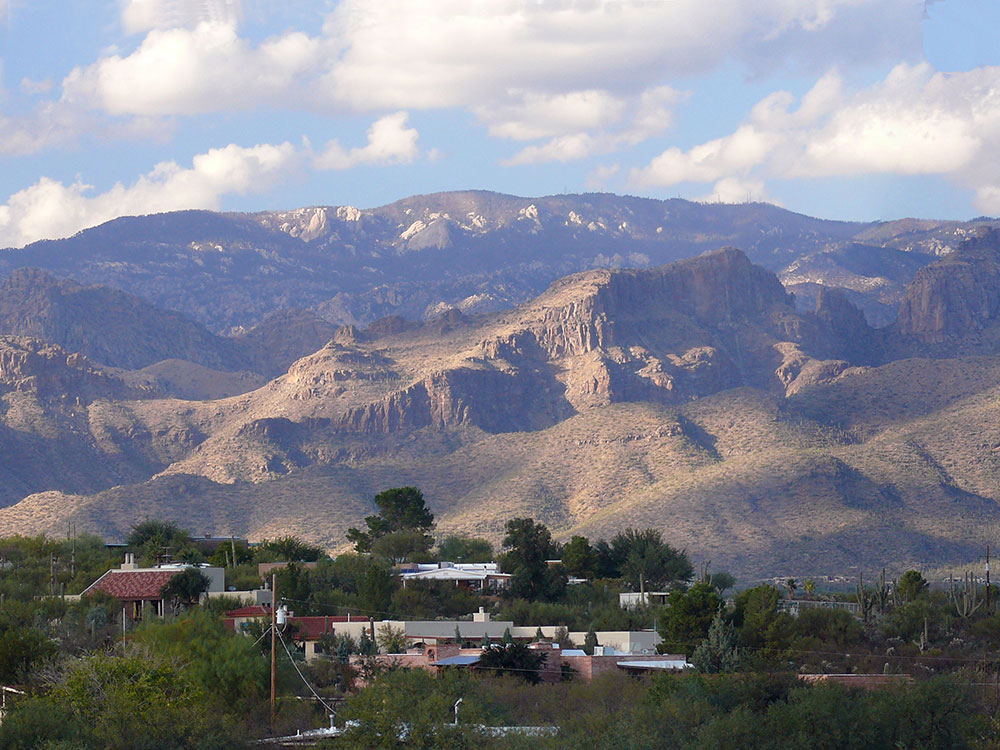
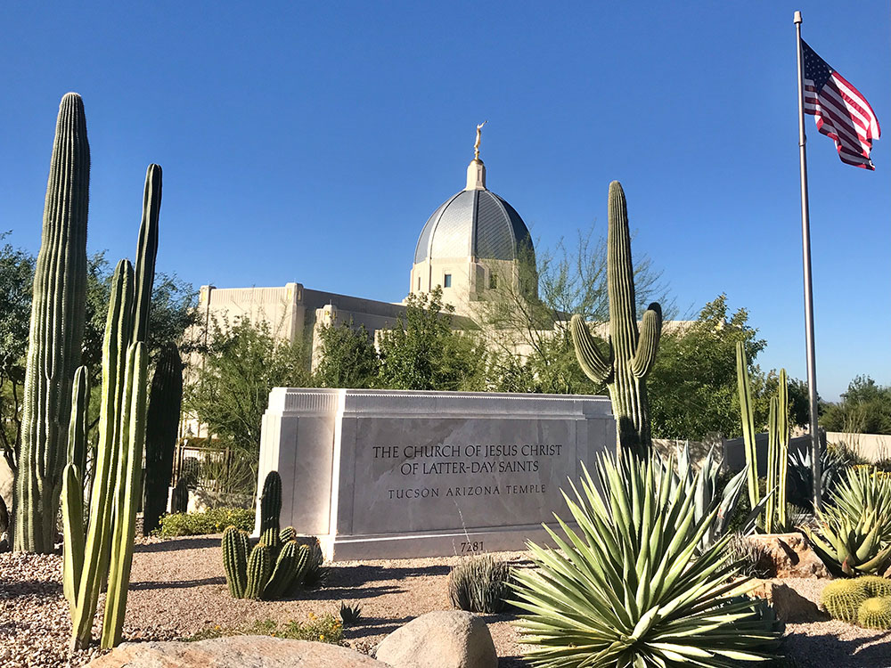
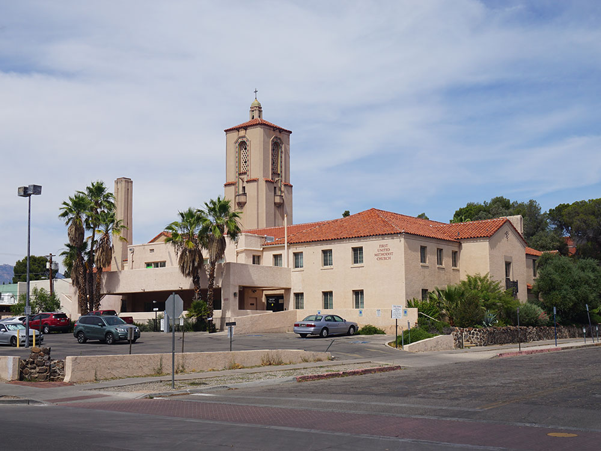
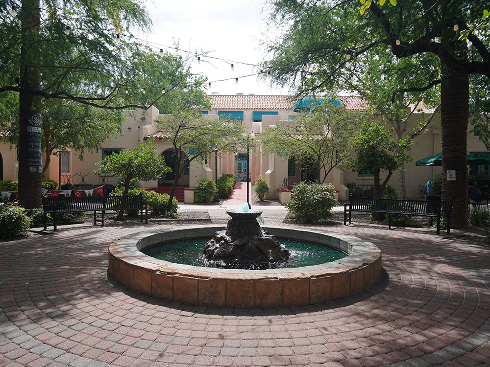
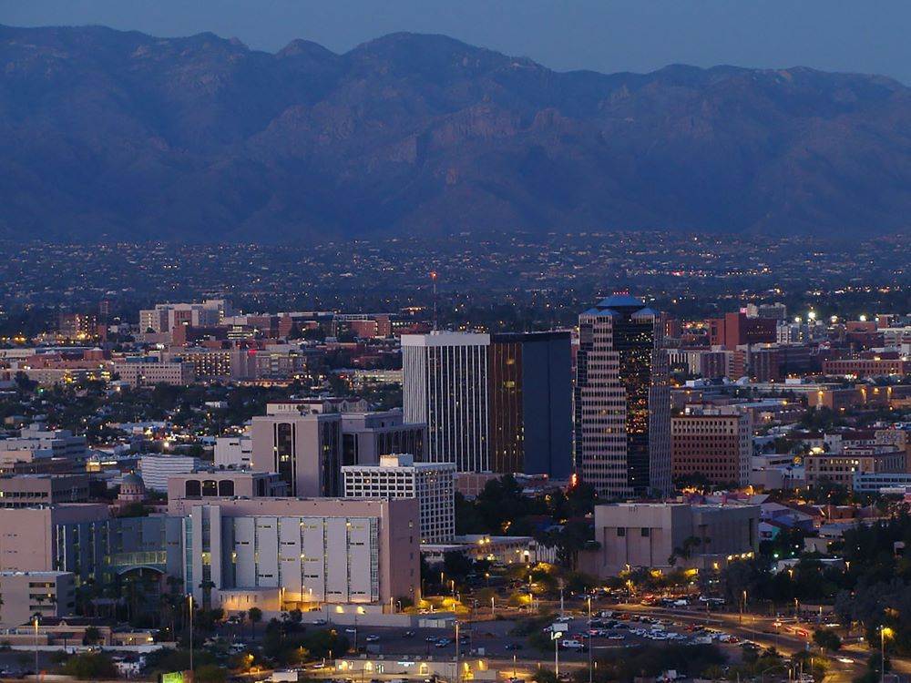

Tucson Travel Guide
Second largest city in Arizona, located in the Sonoran Desert, surrounded by five minor ranges of mountains including 9,157 ft Mount Lemmon, the southernmost ski destination in the continental US
Places to See in Tucson

Annette Teng, CC BY 3.0, via Wikimedia Commons; Image Size Adjusted

Arizona State Museum
State museum preserving and interpreting the rich cultural heritage of the American Southwest through extensive archaeological, ethnographic, and Indigenous collections.
Arizona-Sonora Desert Museum
98-acre zoo, aquarium, botanical garden, natural history museum, publisher, and art gallery located near Saquaro National Park

Annette Teng, CC BY 3.0, via Wikimedia Commons; Image Size Adjusted
Catalina State Park
State park adjacent to Coronado National Forest on the western slopes of the Santa Catalina Mountains north of Tucson
Colossal Cave Mountain Park
Desert park and cave system featuring guided tours through limestone caverns alongside hiking trails, ranch history, and scenic Sonoran Desert landscapes.
DeGrazia Gallery in the Sun
Iconic adobe art complex featuring vibrant desert-inspired works, studios, and chapels created by a renowned Southwestern artist.
Garden of Gethsemane
Intimate outdoor sculpture garden featuring handmade concrete religious figures set within a quiet walled space designed for reflection and contemplation.
Gates Pass
Scenic mountain pass featuring winding desert roads, panoramic viewpoints, and sweeping vistas over rugged hills and sunset-lit landscapes.

Mds08011, CC BY-SA 4.0, via Wikimedia Commons; Image Size Adjusted

RT Mission San Xavier del Bac
Historic Spanish Catholic mission located about 10 miles (16 km) south of downtown Tucson
Mount Lemmon
With a summit elevation of 9,159 feet (2,792 m), is the highest point in the Santa Catalina Mountains
Museum of Contemporary Art Tucson
Modern art museum housed in a repurposed historic fire station showcasing contemporary exhibitions, installations, and experimental creative works.

Gillfoto, CC BY-SA 4.0, via Wikimedia Commons; Image Size Adjusted

Pima Air and Space Museum
One of the world's largest non-government funded aerospace museums, featuring a display of nearly 300 aircraft spread out over 80 acres
Presidio San Agustín del Tucsón Museum
Reconstructed Spanish colonial fort museum featuring historic buildings, archaeological remains, and immersive exhibits depicting early desert life.
Sabino Canyon Recreation Area
Significant canyon located in the Santa Catalina Mountains and the Coronado National Forest north of Tucson and a popular recreation area

Saguaro National Park
National park protects two separate areas—the Tucson Mountain District and the Rincon Mountain District that preserve Sonoran Desert landscapes, fauna, and flora, including the giant saguaro cactus
Sentinel Peak Park ("A" Mountain)
Hilltop desert park featuring a prominent landmark letter, hiking trails, and panoramic views overlooking a sprawling city and surrounding mountain ranges.
Southern Arizona Transportation Museum
Rail-themed museum preserving historic locomotives, railcars, and artifacts that showcase the development of transportation and industry in the region.
Titan Missile Museum
Cold War-era missile complex preserved as an underground museum where visitors explore a decommissioned nuclear launch site and control center.

DesertCorner, CC BY-SA 3.0, via Wikimedia Commons; Image Size Adjusted

Tohono Chul Park
Botanical garden, nature preserve and cultural museum located in Casas Adobes, a suburb of Tucson
Trail Dust Town
Western-themed park and entertainment complex recreating a historic frontier town with rides, shops, dining, and live cowboy-style shows.
Tucson Botanical Gardens
Urban oasis featuring themed gardens, desert flora, butterfly exhibits, and curated landscapes that blend nature, art, and cultural heritage.
Tucson Museum of Art
Museum featuring diverse exhibitions spanning regional, contemporary, and international works within preserved adobe and cultural buildings.
Tumamoc Hill
Steep paved hill climb offering a popular workout route with sweeping desert views, city panoramas, and access to a protected natural research area.
University of Arizona Alfie Norville Gem & Mineral Museum
World-class mineral museum showcasing dazzling gemstones, rare crystals, and interactive exhibits focused on geology, mining, and Earth’s natural treasures.
General Information
How to Get There
From Phoenix (115 mi): Take I-10 E from downtown Phoenix and continue south for approximately 115 miles before taking exits into the central Tucson area.
Overview
Tucson is Arizona’s second-largest city and “The Old Pueblo,” a laid-back Sonoran Desert city about 108 miles southeast of Phoenix and 60 miles north of the Mexican border, ringed by five mountain ranges and known for saguaro cactus forests, Spanish-colonial and Mexican heritage, and outstanding Mexican food.
Tucson is a UNESCO City of Gastronomy and home to the University of Arizona. It is popular for its mild, sunny winters, which draw “snowbirds” and outdoor lovers, and for the nearby mountains, which offer cool escapes. Visitors come to see Saguaro National Park, historic missions and museums, and a lively downtown and university district.
Tucson is among the oldest continually inhabited places in the country, with farming villages along the Santa Cruz River dating back thousands of years and the Hohokam living here from AD 600 to 1450. Father Kino founded Mission San Xavier del Bac in 1700, and the Spanish built the Presidio San Agustín del Tucsón in 1775. The U.S. acquired the area in the Gadsden Purchase of 1854, and Tucson was territorial capital from 1867 to 1877.
Attractions include Mission San Xavier del Bac, the Arizona-Sonora Desert Museum, the DeGrazia Gallery in the Sun, Old Tucson Studios, Kitt Peak National Observatory and Biosphere 2. Downtown has historic Hotel Congress, the Fox Theatre and Rialto Theatre, El Charro Café (the oldest restaurant) and the lively 4th Avenue Shopping District. Sentinel Peak, or “A” Mountain, gives sunset views of the city.
Tucson’s museums span art, science and history. They include the Arizona State Museum, the Tucson Museum of Art, the Museum of Contemporary Art Tucson, the Pima Air & Space Museum, the Presidio San Agustín del Tucsón Museum, the Titan Missile Museum, and the University of Arizona Alfie Norville Gem & Mineral Museum. The Tucson Gem & Mineral Show each winter is among the largest in the world.
Tucson is ringed by parks and protected desert, including both districts of Saguaro National Park, Sabino Canyon, Catalina State Park, Tohono Chul, Gates Pass, Colossal Cave Mountain Park and Mount Lemmon and its Ski Valley. “The Loop” is a citywide network of paved paths for walking and biking.
Tucson is home to the University of Arizona Wildcats, who compete in NCAA Division I, and the Tucson Roadrunners, a professional hockey team in the American Hockey League. There are no major-league franchises in the city.
Tucson has a hot desert climate. Summers are very hot, with highs above 100°F from June through September, followed by a summer monsoon that brings dramatic thunderstorms. Winters are mild and sunny, with highs in the mid-60s°F, which makes it the busiest season. Spring brings wildflowers and cactus blooms, and fall is warm and pleasant.
This article uses material from the Wikipedia article "Tucson, Arizona", along with Visit Tucson, the National Park Service, the University of Arizona and local museum visitor information, and National Weather Service climate data, which are released under the Creative Commons Attribution-Share-Alike License 3.0.




.jpg){kind=link}

